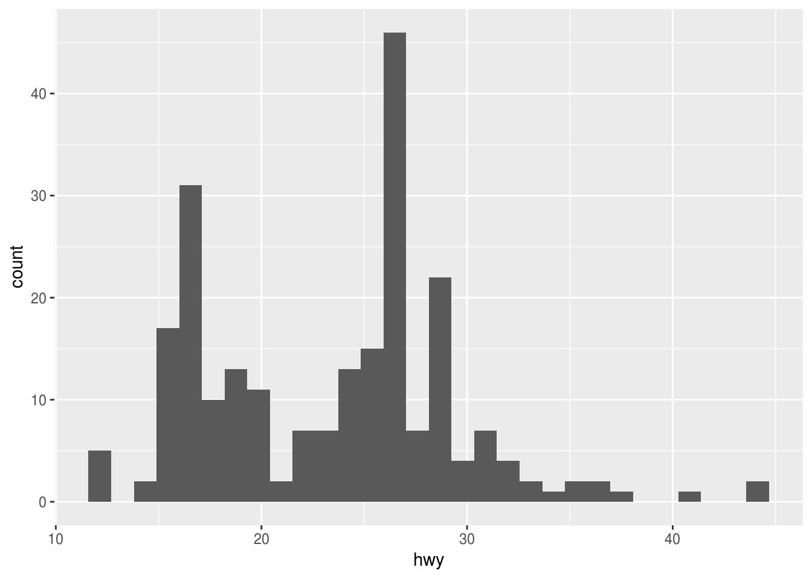
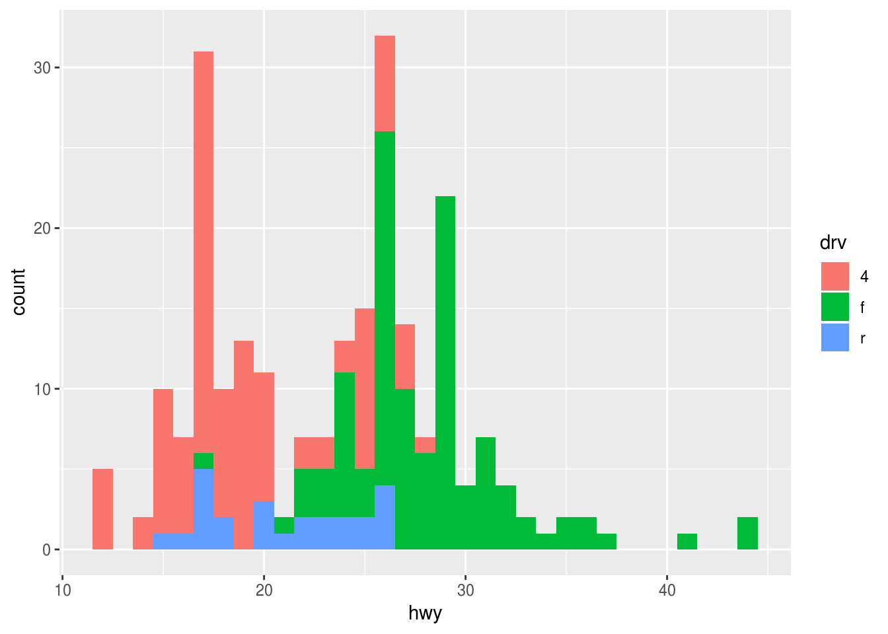
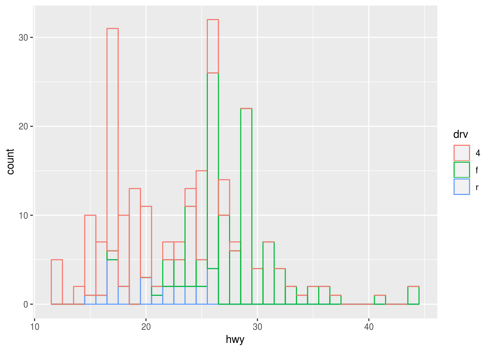
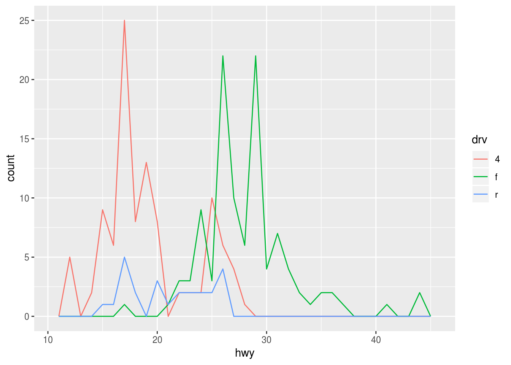
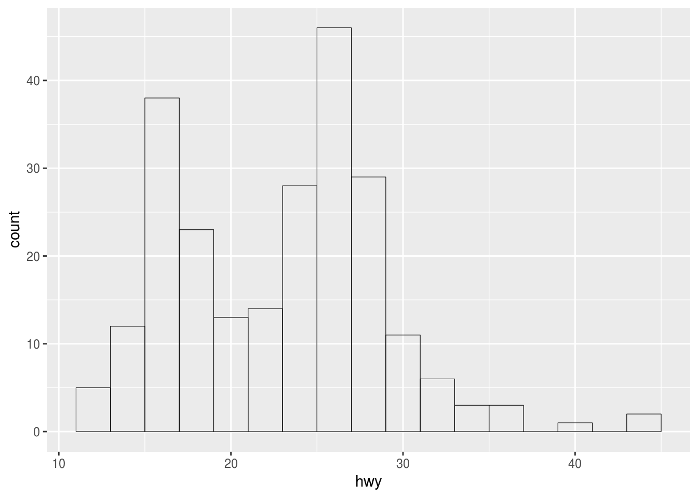
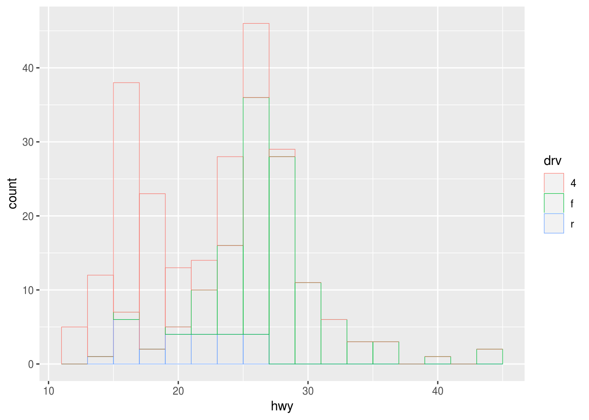

Other geoms
Kirill Müller, cynkra GmbH
June 1, 2017
Arguments to geom_smooth()
Try geom_smooth(). What do the arguments se and method to geom_smooth() change?
ggplot(data = mpg) +
geom_smooth(
mapping = aes(x = displ, y = hwy),
se = ___,
method = ___
)► Solution:
method uses a different model to fit the data:
ggplot(data = mpg) +
geom_point(mapping = aes(x = displ, y = hwy)) +
geom_smooth(mapping = aes(x = displ, y = hwy), method = "lm")se = FALSE turns off the confidence band:
ggplot(data = mpg) +
geom_point(mapping = aes(x = displ, y = hwy)) +
geom_smooth(mapping = aes(x = displ, y = hwy), se = FALSE)## `geom_smooth()` using method = 'loess' and formula 'y ~ x'The rug
What does geom_rug() do? Try to reduce overplotting with transparency or by adding position = "jitter". How do you reduce overplotting for the points layer?
ggplot(data = mpg) +
geom_point(
mapping = aes(x = displ, y = hwy),
___ = ___
) +
geom_rug(
mapping = aes(x = displ, y = hwy),
___ = ___
)► Solution:
Plots marginal distributions of the data close to the axes.
ggplot(data = mpg) +
geom_point(mapping = aes(x = displ, y = hwy)) +
geom_rug(mapping = aes(x = displ, y = hwy))To reduce overplotting, the “alpha” aesthetic can be set independently for each geom to a constant value:
ggplot(data = mpg) +
geom_point(
mapping = aes(x = displ, y = hwy),
alpha = 0.3
) +
geom_rug(
mapping = aes(x = displ, y = hwy)
)ggplot(data = mpg) +
geom_point(
mapping = aes(x = displ, y = hwy)
) +
geom_rug(
mapping = aes(x = displ, y = hwy),
alpha = 0.3
)Order of geom_...() calls
How does the order of the geom_...() calls affect the display?
ggplot(data = ___, mapping = aes(_____)) +
geom_point() +
geom_smooth()ggplot(data = ___, mapping = aes(_____)) +
geom_smooth() +
geom_point()► Solution:
The geoms are painted in order of appearance:
ggplot(data = mpg) +
geom_point(mapping = aes(x = displ, y = hwy)) +
geom_smooth(mapping = aes(x = displ, y = hwy))## `geom_smooth()` using method = 'loess' and formula 'y ~ x'
ggplot(data = mpg) +
geom_smooth(mapping = aes(x = displ, y = hwy)) +
geom_point(mapping = aes(x = displ, y = hwy))## `geom_smooth()` using method = 'loess' and formula 'y ~ x'Compare highway and city
Can you plot both highway and city economy in one plot?
Hint: The solution to this exercise is not the recommended way of doing this in ggplot2. We’ll find a better way in a subsequent exercise.
ggplot(_____) +
geom_point(mapping = _____, color = "___") +
geom_point(mapping = _____, color = "___")► Solution:
We could add two layers, each with a different color. But this still doesn’t give us a legend.
ggplot(data = mpg) +
geom_point(mapping = aes(x = displ, y = hwy), color = "red") +
geom_point(mapping = aes(x = displ, y = cty), color = "blue")
Cars by drivetrain
Use a bar plot to find out how many cars of each drivetrain (front/rear/4wd) the mpg dataset contains. Which aesthetic mappings do you need to specify?
Hint: Find the relevant geom by typing geom_ on the console or in your script file.
ggplot(_____, aes(_____)) +
geom____()► Solution:
I tried geom_histogram() and geom_col(), neither worked. The histogram is for continuous data only, for geom_col() I’d need to supply actual counts which I don’t have. The geom_bar() function computes the counts for me by applying the "count" statistical transformation to my data before plotting.
We need only the “x” aesthetic, “y” is computed automatically. drv is the relevant variable.
ggplot(mpg) +
geom_bar(aes(x = drv))
Explicit count
Does the appearance of the plot change when you add y = ..count.. to the aes() call? Why/why not?
ggplot(_____, aes(_____, y = ..count..)) +
geom____()► Solution:
The output is the same:
ggplot(data = mpg) +
geom_bar(mapping = aes(x = drv, y = ..count..))geom_bar() plots the computed “count” aesthetic, which is by convention written with two surrounding dots.
Proportions
What happens if you instead use y = ..prop.., group = 1 in the aes() call? What happens if you omit group = 1? Why?
Hint: The section “Computed variables” to geom_bar() offers a brief explanation.
ggplot(_____, aes(_____, y = ..prop.., group = 1)) +
geom_bar()► Solution:
Plotting overall proportions changes the y scale:
ggplot(data = mpg) +
geom_bar(mapping = aes(x = drv, y = ..prop.., group = 1))Omitting group will plot proportions per drivetrain in each column, which are 1 by default:
ggplot(data = mpg) +
geom_bar(mapping = aes(x = drv, y = ..prop..))Fuel economy
Visualize the overall distribution of fuel economy in the dataset with a histogram. Compare this with a frequency polygon, use a second layer if you like.
ggplot(data = mpg, mapping = aes(x = hwy)) +
geom____()► Solution:
We use a histogram of hwy, again only the “x” aesthetic needs to be supplied:
ggplot(data = mpg) +
geom_histogram(mapping = aes(x = hwy))## `stat_bin()` using `bins = 30`. Pick better value with `binwidth`.
The frequency polygon is very similar. We tweak aesthetics manually in order to be able to distinguish between both layers.
ggplot(data = mpg) +
geom_histogram(
mapping = aes(x = hwy),
fill = NA,
color = "blue",
binwidth = 1
) +
geom_freqpoly(
mapping = aes(x = hwy),
binwidth = 1,
size = 2
)Silencing a warning
How do you remove the warning in the previous example?
ggplot(_____) +
geom_____(binwidth = ___)► Solution:
The bin width should be set explicitly to avoid the warning:
ggplot(data = mpg) +
geom_histogram(
mapping = aes(x = hwy),
binwidth = 1
)Fuel economy by drivetrain
Visualize the distribution of fuel economy in the dataset per drivetrain. Do you prefer a histogram or a frequency polygon?
► Solution:
We can set the “fill” aesthetic:
ggplot(data = mpg) +
geom_histogram(
mapping = aes(x = hwy, fill = drv),
binwidth = 1
)
However, the bars are stacked, and difficult to compare to each other:
ggplot(data = mpg) +
geom_histogram(
mapping = aes(x = hwy, color = drv),
fill = NA,
binwidth = 1
)
The frequency polygon offers a much clearer display of the same data:
ggplot(data = mpg) +
geom_freqpoly(
mapping = aes(x = hwy, color = drv),
binwidth = 1
)
A history of failed attempts
Can I just copy and adapt the code from the last solution?
ggplot(mpg, aes(hwy, color = drv)) +
geom_histogram(fill = NA, color = "black", size = 0.2, binwidth = 2) +
geom_freqpoly(color = "red", binwidth = 2)Nope. Something’s wrong here. Maybe if I follow the template?
ggplot(mpg) +
geom_histogram(
aes(hwy, color = drv),
binwidth = 2,
fill = NA,
color = "black",
size = 0.2
)
I can’t use color both as variable and manual aesthetic, ggplot2 silently uses the manual assignment! Need to be careful with assigning aesthetics.
ggplot(mpg) +
geom_histogram(
aes(hwy, color = drv, group = drv),
binwidth = 2,
size = 0.2,
fill = NA
) +
geom_freqpoly(
aes(hwy, color = drv, group = drv),
binwidth = 2
)ggplot(mpg) +
geom_histogram(
aes(hwy, color = drv),
binwidth = 2,
size = 0.2,
fill = NA
)
ggplot(mpg) +
geom_freqpoly(
aes(hwy, color = drv),
binwidth = 2
)More exercises
Find more exercises in Sections 3.6.1 and 3.7.1 of r4ds.
Copyright © 2019 Kirill Müller. Licensed under CC BY-NC 4.0.